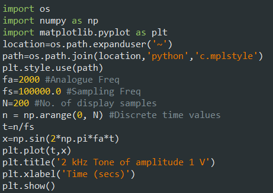
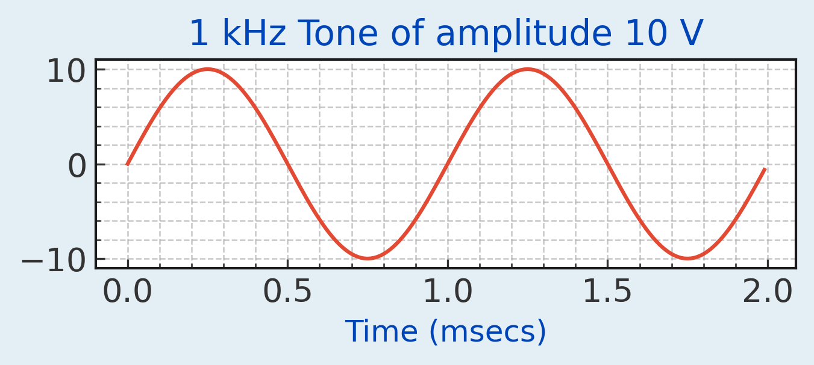
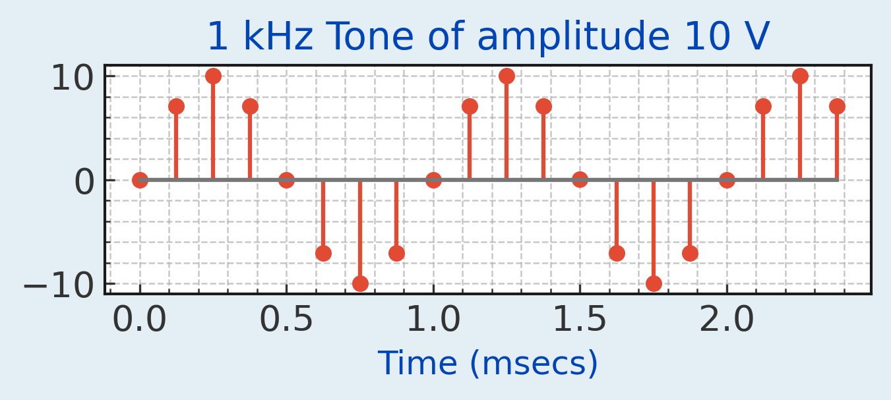

The purpose of this page is to give some basic guidelines for exploring Digital Signal Processing (DSP) with Python. The Python code below produces a sampled sinusoidal signal of amplitude A=10 V, and of frequency fa=1000 cycles per second (Hz). The sampling frequency fs=100,000. This represents the number of samples/sec. The number of display samples N=200. The time axes ''t'' is used in the plotting function. It is scaled by a factor of 1000 so that the time axis is plotted in milliseconds (msecs).


You can decide which version of Python that you wish to use yourself. The Scientific Python Development Environment( Spyder Python IDE ) is excellent. You also need to import some libraries to provide extra functionality. The 1st one is numpy which is numerical Python. This contains many different functions to facilitate numerical analysis. The 2nd one is matplotlib.pyplot which allows plotting of various signals. From the above plot, you can see that the period of the signal is 1 ms and the amplitude is 10 V. The default display settings can be adjusted using a style file. You need to create a file called dspbook.mplstyle ( MPL Style Code )
Save this file in the same location where you save your Python files. The material used in this page is based on the book in the following link: Introduction to Digital Signal Processing Using Python
Change the sampling frequency to 8000 Hz, the number of samples to 20 and replace the plot instruction with the stem instruction plt.stem(t,tone).

The samples are easier to see in this zoomed in stem diagram. It can be seen that the number of samples per period in this case is 8.
Plotting the spectrum of a signal